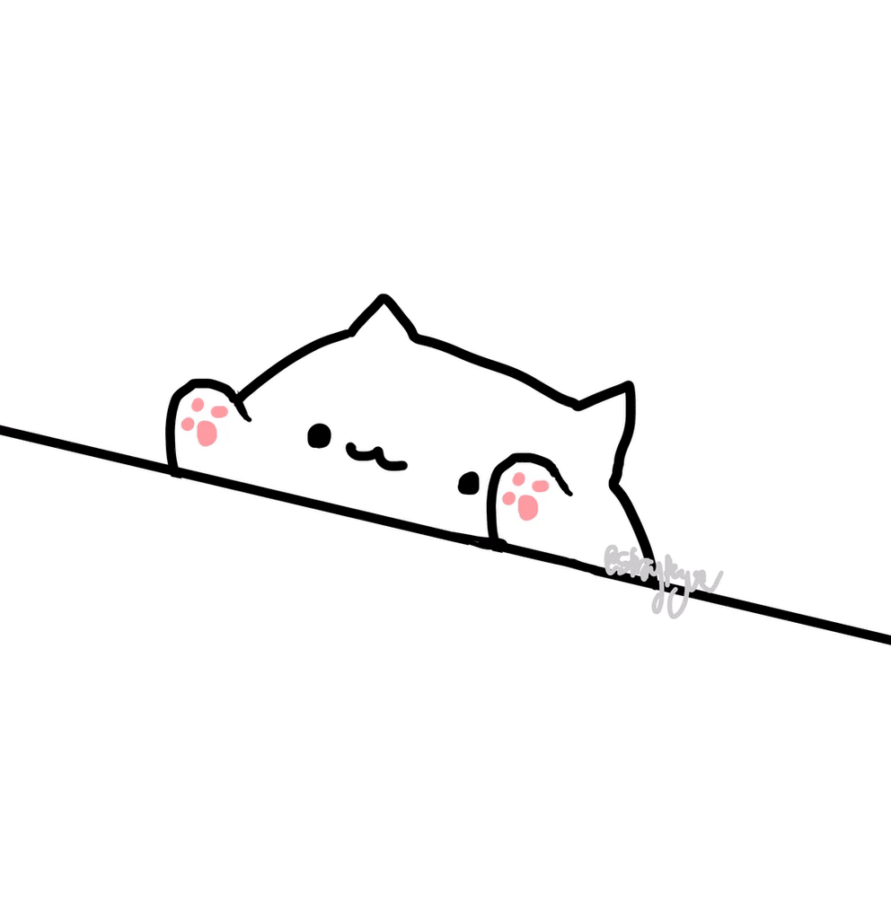

Bongo cat:
Bongo Cat is an animation of a cat playing the bongos.
The cat is being used in different remix videos, in those videos it looks like the cat is playing that song.
The first video of Bongo Cat grew really popular, people made different versions using all sorts of songs using other instruments.
Origin:
On 7 May 2018, DitzyFlama responded to StrayRogue’s Gif, where an animated cat was hitting a table, by posting a video where he had edited the GIF,
added some bongos and let it perform the song “Athletic” from the soundtrack of Super Mario World.
After that moment the video grew really popular with 7000 likes and over 3800 retweets.
The original post:
The first video that became viral:
Creative variations of the meme:
Here's a compilation of videos created by the meme community: